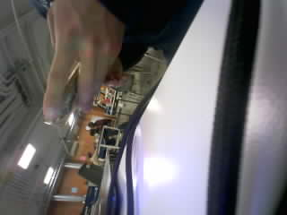
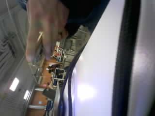
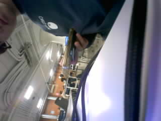
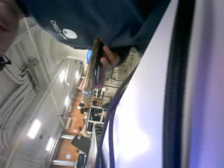
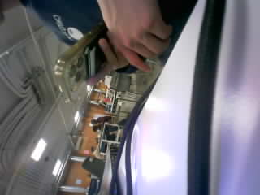
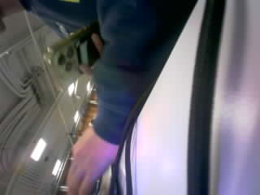
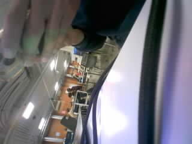
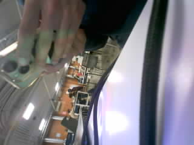

Frame 2: CAMERA_TEST | 0.000% changed area
Original JPEG · MeasurementsOriginal photos are unchanged. Boxes show the largest changed region against the learned empty scene. Area cutoff is recorded with each photo; confirmation: 3 frames. This is not deer recognition.

Frame 2: CAMERA_TEST | 0.000% changed area
Original JPEG · Measurements
Frame 3: CAMERA_TEST | 0.000% changed area
Original JPEG · Measurements
Frame 4: CAMERA_TEST | 0.000% changed area
Original JPEG · Measurements
Frame 5: CAMERA_TEST | 0.000% changed area
Original JPEG · Measurements
Frame 6: CAMERA_TEST | 0.000% changed area
Original JPEG · Measurements
Frame 7: CAMERA_TEST | 0.000% changed area
Original JPEG · Measurements
Frame 8: CAMERA_TEST | 0.000% changed area
Original JPEG · Measurements
Frame 9: CAMERA_TEST | 0.000% changed area
Original JPEG · Measurements